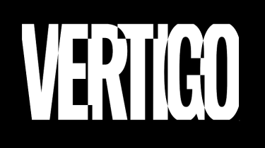
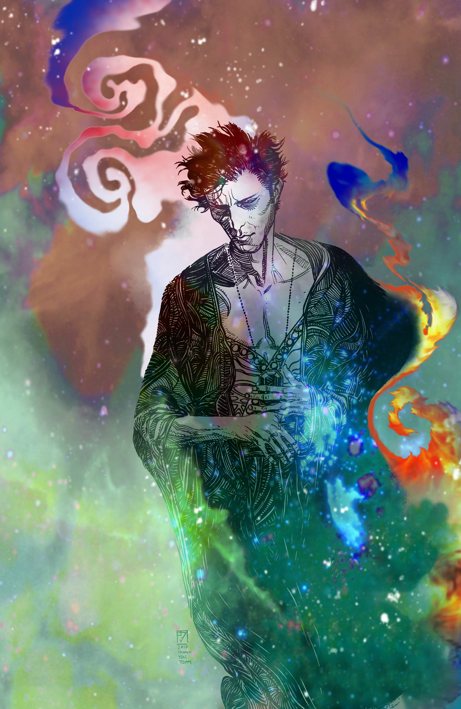
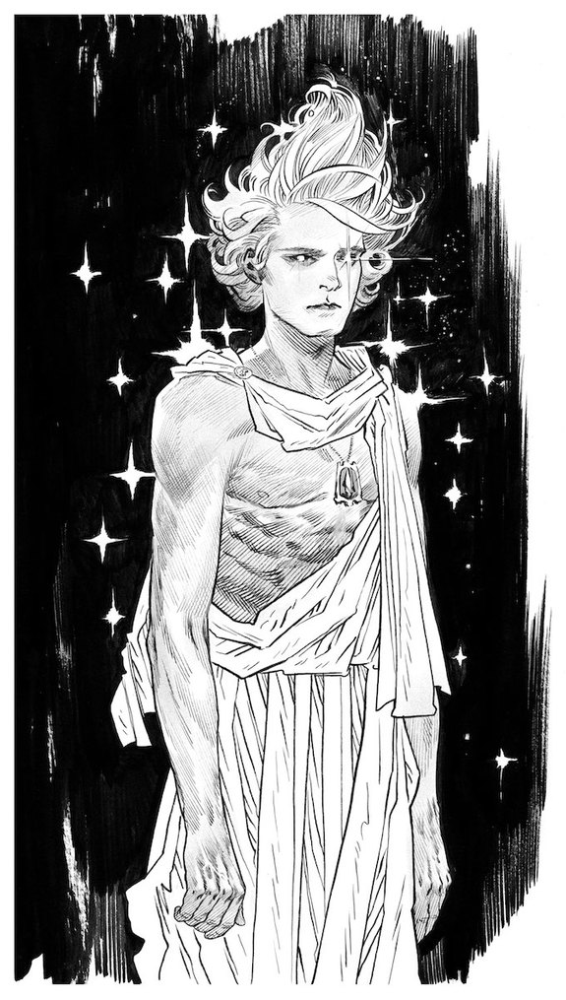
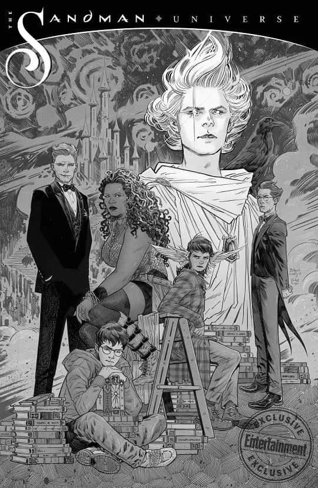
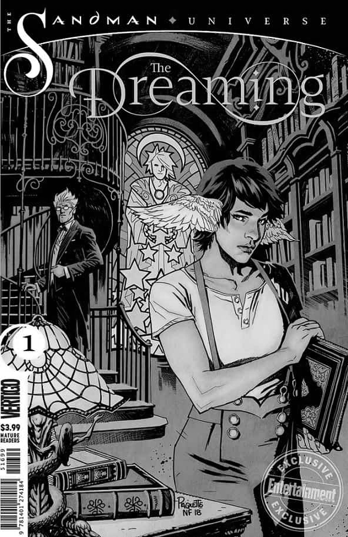
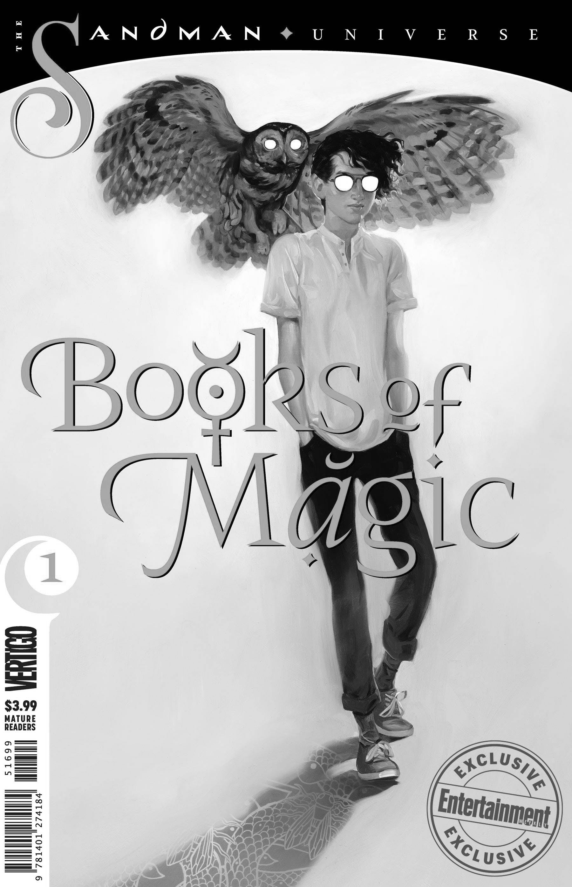
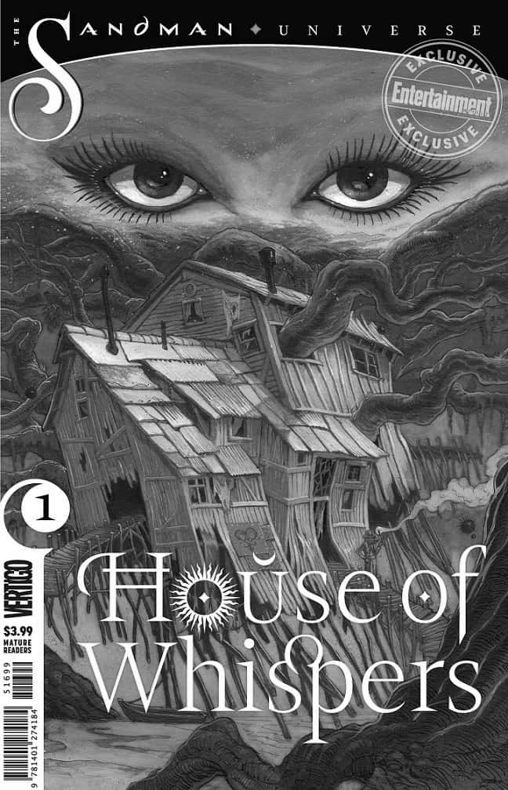
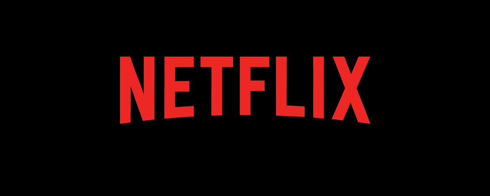

Vertigo: a revolução no modo de contar história
Em meados da década de 1980 as principais revistas de quadrinhos da DC Comics não estavam alcançando as metas de vendas, então a editora teve a ideia de reformular a sua linha criativa, designando uma pessoa, que seria a editora Karen Berger, para buscar novos talentos para escrever suas histórias. Tudo começou na Inglaterra. Para ser mais exato, com Alan Moore, dessa mente inspiradora que saíram Monstro do Pântano e Watchmen, dois trabalhos para a DC Comics que incontestavelmente revolucionaram os quadrinhos nos anos 80. Foram obras tão fora dos padrões que a DC percebeu que não conseguiria nada parecido dos escritores americanos, com seu molde inquebrável para roteiros há pelo menos duas décadas. Para conseguir mais, era preciso falar com os compatriotas de Moore.
A editora Karen Berger foi destacada para visitar o Reino Unido em 1987. A missão: conhecer a cena de quadrinhos britânica e trazer bons currículos. Conversou com um roqueiro escocês de 20 e poucos anos, Grant Morrison, que conhecia toda a história do Universo DC. Com um jornalista, Neil Gaiman, chegado em histórias de terror. Com um amigo de Moore, Jamie Delano, cujo emprego era motorista de ônibus. E com Peter Milligan que, como os outros, também experimentava com HQs para a clássica revista inglesa 2000 A.D.
Berger voltou pra casa cheia de propostas para revitalizar a DC. Cinco anos depois, o Homem–Animal e a Patrulha do Destino de Morrison haviam redefinido os limites dos gibis de super–heróis, a Hellblazer fundada por Delano era a melhor série de terror do mercado, Peter Milligan tinha Shade – O Homem Mutável e um arquivo inesgotável de ideias… e Sandman, de Gaiman, era a HQ mais aclamada dos anos 90. Infelizmente no ano de 2020 o selo irá ser extinto. As histórias da Vertigo devem continuar em publicação através do selo DC Black Label.

O Mito de Sandman
Poucas HQs na história do mundo ocidental transcenderam o gênero e romperam barreiras como Sandman conseguiu. Mesclando mitologias modernas e fantasia sombria, além de acrescentar elementos modernos, históricos e míticos, Sandman foi considerada uma das séries mais artisticamente ambiciosas dos quadrinhos. Quando foi concluída, em 1996, já tinha mudado a nona arte para sempre e se tornado um fenômeno da cultura pop, bem como um marco das HQs, tornando difusa a fronteira imaginária entre os quadrinhos em geral e o que consideramos como arte.
Foi publicada sob o selo Vertigo da editora DC Comics, a primeira série em quadrinhos a receber um prêmio literário. Em 1991 foi contemplada com o World Fantasy Award, na categoria de melhor história breve. Dizia-se estar muito a frente do seu tempo, ao longo da sua publicação de sete anos (1989-1996) e entrou, em 2003, na lista de Best-Sellers do The New York Times, o seu autor é o ilustre britânico Neil Gailman. A história é baseada no mito americano, de mesmo nome (no Brasil conhecido como João Pestana), que é resposável por fazer as pessoas adormerecem com sua areia mágica, jogando-a em suas vistas, e por isso quando são despertadas do sono estão com sujeira em seus olhos.
A série conta a história de Morfeus, um dos Perpétuos — criaturas análogas aos deuses, mas ainda maiores —, responsável pelo Mundo dos Sonhos. Basicamente ele controla e tem acesso a todos os sonhos da humanidade e de todas as criaturas capazes de sonhar, sendo o senhor do Mundo dos Sonhos, a terra aonde vamos em nossas horas de sono.
Quando uma ordem mística tentou capturar a irmã de Sonho, a Morte, em seu lugar eles capturaram Morfeus. Assustados com o que conseguiram, os membros da ordem o mantiveram cativo. E assim teve início um período de diversas décadas em que esse Perpétuo ficou trancafiado à mercê de seus captores, deixando o Mundo dos Sonhos abandonado e os sonhadores desamparados. A série nos revela como ele se libertou e como foi capaz de se adaptar no mundo após tantos anos de ausência, e também nos mostra um vislumbre de sua história e da mitologia dos Perpétuos.
Sandman Universe
No ano de 2018, em comemoração aos 30 anos de Sandman, a DC Comics e Neil Gaiman anunciaram The Sandman Universe. Uma linha de quadrinhos com base na série original. Os álbuns vão utilizar os temas de Sandman, mas ao mesmo tempo, vão adicionar novos personagens e conceitos. As publicações começaram com um One Shoot e depois serão revelados mais quatros títulos que darão continudade a série mas de forma separada uma da outra.
"O Universo de Sandman é uma caixa de areia com vários brinquedos maravilhosos que ninguém estava usando para brincar. Eu comecei a me sentir culpado. Eu queria ver esses brinquedos serem utilizados mais uma vez, lembrando as pessoas da diversão que eles eram e ter a oportunidade de trabalhar com alguns escritores fantásticos”, disse Gaiman.

Confira as artes de capas:





Série produzida pela Netflix
Sinopse: "Uma rica mistura de mitos modernos e fantasia sombria em que ficção moderna, drama histórico e lendas estão perfeitamente interlaçadas, Sandman segue as pessoas e locais afetados por Morpheus, o Senhor dos Sonhos, enquanto ele conserta os cósmicos - e humanos - erros que fez durante sua vasta existência".
Depois de diversas tentativas da New Line de levar a adaptação para os cinemas, o serviço de streaming fechou um acordo milionário com a Warner Bros. Television para tranformar Sandman em uma série de TV. Ainda segundo as fontes do HR, essa seria o programa mais caro já produzido pela Warner.
Allan Heinberg (Mulher-Maravilha, Grey's Anatomy) assina o roteiro e assume o posto de showrunner. Neil Gaiman, criador da HQ, será o produtor-executivo ao lado de David Goyer - retomando a parceria que tentou levar a HQ para os cinemas. Ao todo serão 11 episódios e não há previsão de estreia.
A Warner tenta adaptar Sandman desde a década de 90. A última tentativa chegou a ter Joseph Gordon-Levitt envolvido. O ator planejava estrelar e dirigir o longa, deixando o filme por diferenças criativas com o estúdio. Depois foi a vez do roteirista Eric Heisserer abandonar a adaptação sob a justificativa de que a TV era o melhor meio para a história de Morpheus. "Cheguei à conclusão que a melhor versão desta propriedade existe como uma série da HBO ou uma série limitada, não como um filme, nem como uma trilogia", declarou na ocasião.
Fonte: www.omelete.com.br